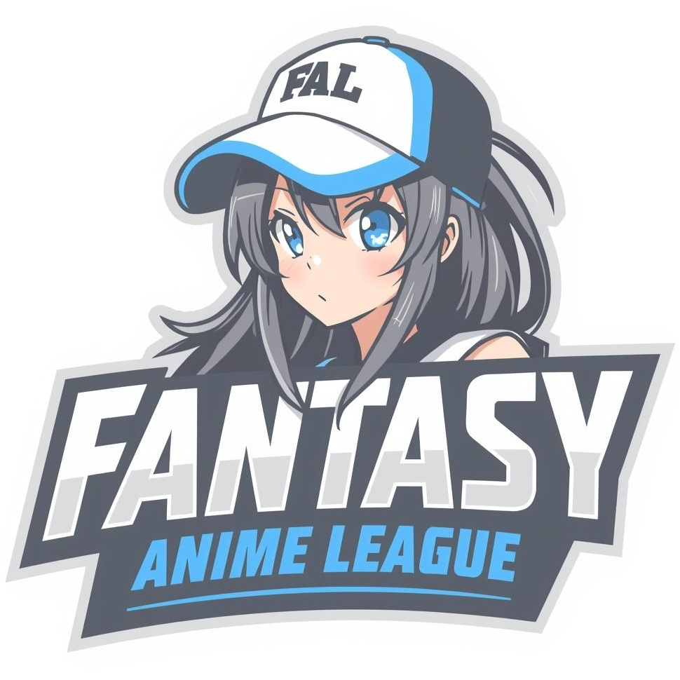

Welcome to the Fantasy Anime League project! This app is designed for anime fans who want to
compete with their friends by drafting shows each season and scoring points as episodes air.
Unlike larger platforms, this project is built around small-scale,
friend-focused leagues, where the fun is about your circle — not random strangers.
At its core, this project is about community. Anime is more fun when shared, and this app gives fans a structured way to enjoy seasonal shows together while keeping things casual and personal.
Current Version: v0.2
What’s new in v0.2:
– Draft rules outlined and documented
– Scoring system prototypes in progress
– Placeholder UI and layouts under design
Next major milestone: v1.0 (Lite Version), planned for January, which will include core drafting, scoring, and messaging features.
Most fantasy anime platforms are big, complicated, and don’t really work for a group of friends who just want something casual. Fantasy Anime League fills that gap by focusing on smaller, community-driven leagues. It’s less about high-stakes competition and more about enjoying seasonal shows with your closest friends.
Anime releases are structured into four major seasons each year: Winter, Spring, Summer, and Fall. Each season usually brings new shows lasting about 12 episodes (one per week). This natural schedule makes anime a perfect fit for a fantasy-style league system.
Check out the Project Details page for a deeper look at features, roadmap, and long-term goals.